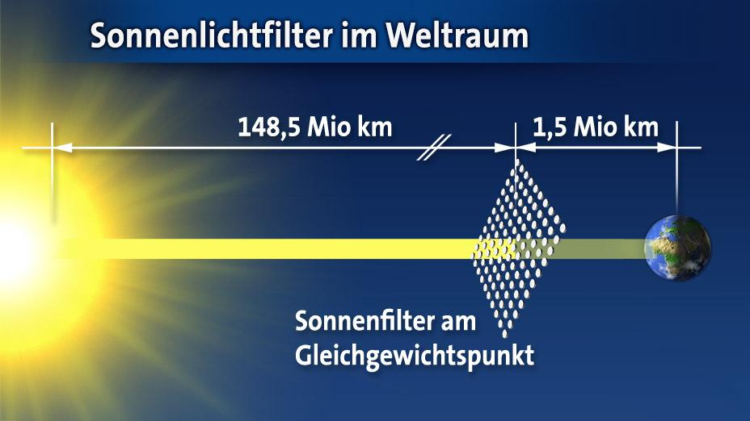
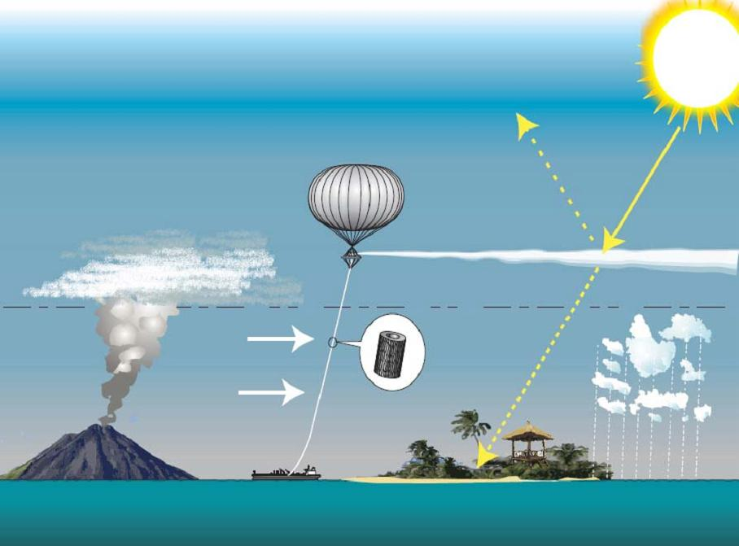
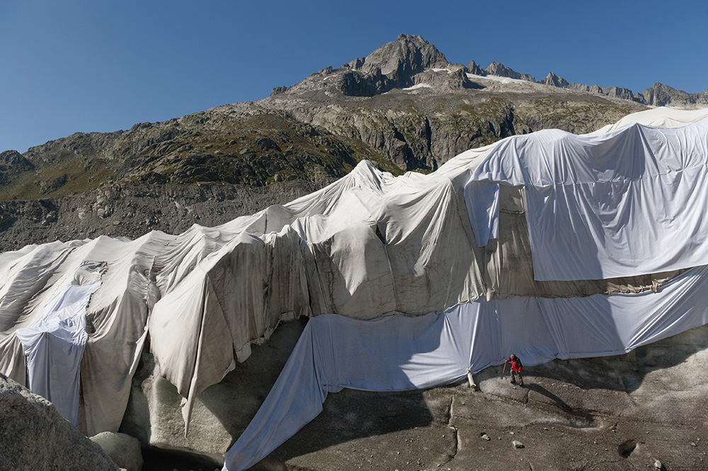
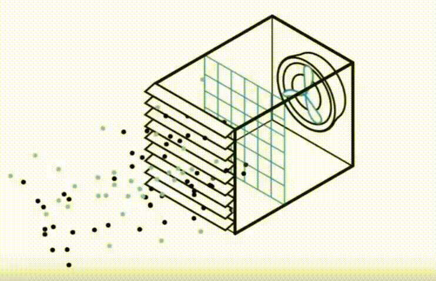

Gedankenexperiment


Geoengineering/
Klimaengineering
Geoengineering/
Der innovative Weg, den Klimawandel zu verlangsamen?
Klimaengineering
von Luis & Sam
Gliederung
- Was ist Geoengineering
- Arten von Geoengineering
- Beeinflussung des Strahlenhaushaltes
- Bindung von CO₂
- Eigene Meinung
Was ist Geoengineering?
"Geoengineering wird als eine umfassende Zusammenstellung von Methoden und Technologien definiert, die darauf abzielen, das Klimasystem bewusst zu verändern, um Folgen des Klimawandels abzumildern."
Arten von geoengineering
| Beeinflussung des Strahlenhaushalts |
Bindung von CO₂ |
|---|---|
| Sonneneinstrahlung im Weltall abschirmen | Kohlenstoff in Biomasse umwandeln |
| Albedo des Bodens erhöhen | Verwitterung anregen |
| Albedo der Atmosphäre erhöhen | Direkte Entnahme aus der Luft |
Solarer Schild
Solarer Schild
Solarer Schild
Einfach Sonnenlicht nicht in die Atmosphäre hereinlassen!
| Vorteile | Nachteile |
|---|---|
| Erde muss nicht umgestaltet werden damit es funktioniert | Raketen verpesten wiederum die Umwelt |
| Sofortige, kontrollierbare Regelung der Erdalbedo | Sonneneinstrahlung nicht mehr gleichmässig |
Stratosphärische Aerosole
Stratosphärische Aerosole
Stratosphärische Aerosole
DIY Wolken
++ Sehr einfach zu machen
+ Relativ kostengünstig
- Heizt Stratosphäre auf
-- Kann Ozonschicht schädigen
Reflektive Materialien am Boden
Reflektive Materialien am Boden
Reflektive Materialien am boden
Sonnenlicht? Nicht auf unserem Boden!
- Albedo des Boden soll erhöht werden
- 10% des Festlandes müssen bedeckt sein Probleme:
- Hohe Geldbeträge nötig
- Lebensgrundlage für einige Organismen wird zerstört werden
Reflektive Materialien an der Ozeanoberfläche
Reflektive Materialien an der Ozeanoberfläche
Sonnenlicht? Nicht in unseren Meeren!
- reflektive Luftkissen o.ä. an der Meeresoberfläche
- Albedo des Meeressoll erhöht werden Probleme:
- Größtes Ökosystem von Licht abgeschnitten
- Hohe Geldbeträge nötig
- weniger Sauerstofferzeugung durch Algen
Ozeandüngung
Ozeandüngung

Ozeandüngung
Die Algen arbeiten lassen!
++ Sehr einfach zu machen
+ Relativ billig
-- Kann verheerende Wirkungen auf Leben im Meer haben
CO₂ ausfiltern
CO₂ ausfiltern
CO₂ ausfiltern
Abgase entfernen!
| Vorteile | Nachteile |
|---|---|
| Macht Verschmutzung der Menschen rückggängig |
Hohe Kosten: Mehrere 100 € pro Tonne CO2 |
| Materialien im Vergleich nicht so teuer |
Sehr hoher Stromverbrauch |
| Nicht für immer speicherbar |
Fazit
Es gibt ein definitives Potenzial, ABER
- Viele Technologien unausgereift, oder schwierig umzusetzen
- Es müssen noch mehr Studien durchgeführt werden
Danke für euer Aufmerksamkeit!
Quellen (Text)
- https://www.umweltbundesamt.de/sites/default/files/medien/publikation/long/4125.pdf
- https://wiki.bildungsserver.de/klimawandel/index.php/Ozeand%C3%BCngung#Methode
- https://www.deutsches-klima-konsortium.de/de/klimafaq-7-3.html
- https://wetter.tagesschau.de/wetterthema/2022/11/04/geoengineering.html
- https://climeworks.com/
Quellen (Bilder)
https://media0.faz.net/ppmedia/aktuell/3278645512/1.6068024/width610x580/zerstoerte-gebaeude-in-der.jpg
https://media.tag24.de/1200x800/i/q/iq05odlbg6ddpvjod4wxth6oewe5kirb.jpg